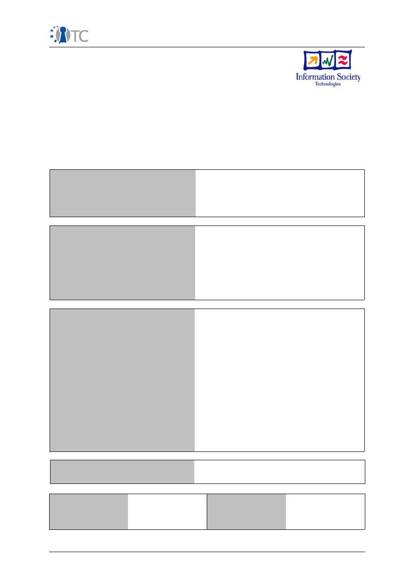
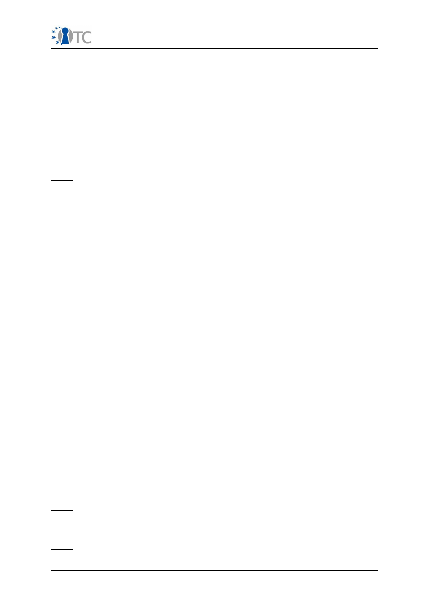
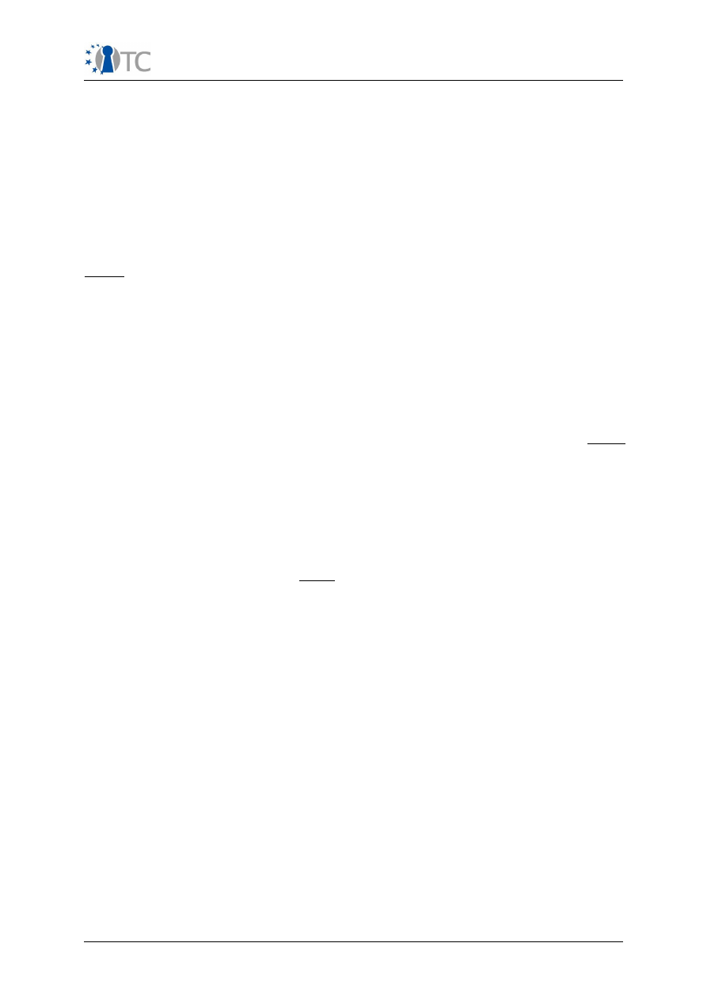
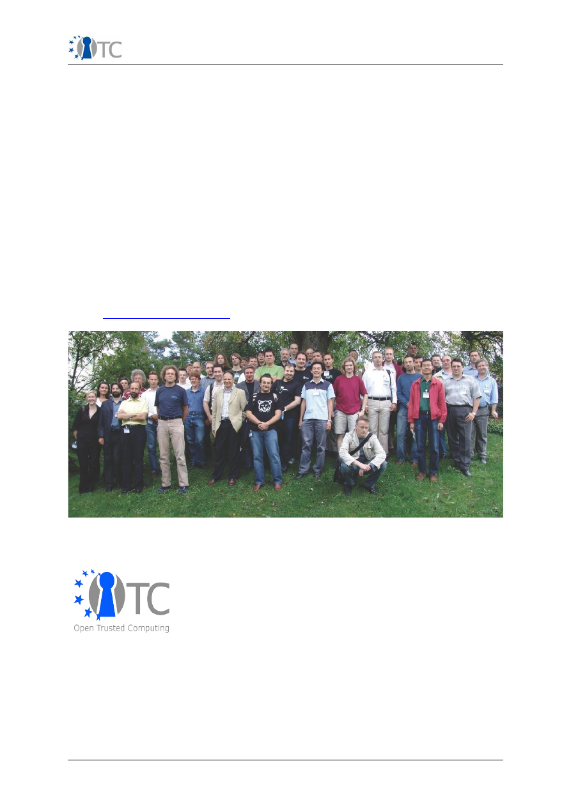

Publishable Executive Summary P
eriod 3
D01.6 Periodic Reports (M25-M42)
Publishable Executive Summary
Project number
IST-027635
Project acronym
Open_TC
Project title
Open Trusted Computing
Deliverable type
Report
Deliverable reference
number
IST-027635/D01.6/1.1 FINAL
Deliverable title
Publishable Executive Summary
WP contributing to the
deliverable
WP01
Due date
April 2009 - M42
Actual submission date
June 3
rd
, 2009
Responsible Organisation
HP
Authors
Dirk Kuhlmann
Abstract
The Open Trusted Computing (OpenTC)
project develops a trusted and secure
computing system based on open source
software. The major goals are: developing a
secure operating system architecture,
producing management infrastructures and
software protocols as well as producing
prototype applications. This report shows
the activities performed towards reaching
the goals set for the period M25- M42.
Keywords
OpenTC, summary, progress, objectives,
activities, presentations, budget,
management,
Dissemination level
Public
Revision
1.1
Instrument
IP
Start date of the
project
1
st
November 2005
Thematic
Priority
IST
Duration
42 months
Open_TC Activity Report period 3
1/6
Publishable Executive Summary P
eriod 3
Publishable Executive Summary
Introduction
The Open Trusted Computing (OpenTC) project develops components for a trusted
and secure computing system based on open source software. This IST FP6 project
No 027635 targets traditional computer platforms as well as embedded systems such
as mobile phones, aiming to reduce system-related threats, errors and malfunctions.
In today's computing platforms, the lack of security has given rise to waves of
successful attacks and system crashes, resulting in severe economic damage to
enterprises and private users, as well as endangering critical infrastructure. Using the
trust and security approach of the OpenTC project, system-protection measures will
be an integral part of the computer system kernel. The weaknesses of today's
computers, which require that insecure operating systems are shielded by an ever
increasing number of protective layers such as virus scanners and firewalls, will be
complemented and potentially replaced by integrated trust and security.
OpenTC aims at improving the reliability of authenticating platforms and system
components, making it easier to defend against current network threats such as
phishing, viruses, trojan horses, corruptive software and other attacks from hostile
sources. The project's results enable platforms to run critical applications such as
trusted banking or e-commerce software in their own, sealed-off compartments that
are protected against external access. The framework developed in this project can
eliminate most current assaults and dangers in the computing world.
These techniques can also be employed to ward off threats to the reliability and
security of applications and software in devices such as, for example, mobile phones.
Insecure and unreliable behaviour can be eliminated from the start in new IT-based
equipment and applications by exploiting the results of the OpenTC project. The
results will be open source and freely available to users and researchers.
The enabling technology used in OpenTC for computer security is the design and
implementation of a layered system architecture in which a special computer chip,
the Trusted Platform Module (TPM) – similar to a smart card – performs the security
functions in a protected hardware environment. The OpenTC project has three major
technical objectives:
●
Developing a secure operating system architecture consisting of universal
virtualization layers, Trusted Software Stack (TSS) for Linux, and TC and TPM
management software
●
Producing management infrastructures and software protocols for Trusted
Computing in the areas of policy management, including distributed policy
enforcement, security state monitoring and management, network
management, and configuration management software
●
Producing prototype applications for Trusted Computing system support in the
areas of CA, PKI, attestation and zero knowledge authentication, Trusted
WYSIWYS (What You See Is What you Sign) and Proof-of-Concept for digital
signing and verification).
To support these prototypes, OpenTC also addresses the Integration of TC into
existing Public Key Infrastructures and the adaptation of TC APIs (especially the TSS
stack on the TPM to other programming languages, in particular JAVA.
Results of Final Project Phase
The proof-of concept prototype for the 'Corporate Computing at Home' use case
produced in the second project phase was extended and ported to an up-to-date
distribution of OpenSUSE. The result was released as Open Source distribution under
GPLv2. It includes all components necessary to run the use case, including
infrastructure and server elements to generate certificates and perform remote
Open_TC Activity Report period 3
2/6

Publishable Executive Summary P
eriod 3
attestation. The architecture supports hosting instances of Linux as well as those of
MS-Windows XP. For copyright reasons, images for the latter could not be embedded
in the distribution. Instead, documentation was made available on how to build and
configure such images.
Public versions of WP02's cooperative work with external partners were released: the
first one concerned a Protection Profile for High Assurance Kernels, the second one
the IPR study carried out during the last reporting period. The General Requirements
and Specification was extended to include experiences with OpenTC's 'Corporate
Computing at Home' proof-of-concept prototype. Additional user studies were
performed, targeting the design of a suitable graphical user interface in particular.
The results influenced the final design of the OpenTC GUI and highlighted user
expectations for future support of accelerated 3D graphics on virtualized platforms.
This, in turn, opened up a new area of research in WP04.
WP03 finalized the port of the Infineon TSS to Linux, including fixes for problems
found by the code evaluation and testing performed by WP07. New releases of the
JAVA TSS and its set of management tools were produced. A minimalistic execution
environment comprising of a core Linux, the JAVA engine, a Privacy Certificate
Authority capable of self-attestation, and command line tools was produced. Key
management components were redesigned and equipped with Configuration
templates to support ssh, IPSec, and Racoon. PKCS#11 software modules were
adapted for integration with the OpenTC management console.
WP04 concluded the implementation of the virtual network switch to include IPSec as
transport protocol. The result was transferred to WP05 for inclusion in the Trusted
Virtual Datacenter infrastructure. The virtual TPMs architecture designed and
implemented by the work package is integrated with the hypervisor Basic Security
Management Interface (BMSI) and the hierarchical integrity management component
(HIM) developed in cooperation with WP05. The prototyped implementation provides
virtual TPMs to guest operating systems running on XEN or L4. A new, hypervisor-
agnostic architecture for high performance graphics virtualization was developed
that is based on the new 'Gallium' graphics driver architecture. A prototype was
developed for client OpenTC platforms running XEN, proving that the new design
reduces the footprint of the graphics related trusted code base by more than one
magnitude.
WP05 requirements drove the work on the last proof-of-concept prototype that
covers a large subset of the OpenTC framework. The work package developed the
policy management and part of the security enforcement mechanisms of the OpenTC
platform that are part of the proof-of-concept prototype for virtualized data centers.
This included several basic building blocks for Trusted Virtual Domains: TVD master
and proxy, the virtual network switch, components for storage, machine life cycle
management, and extended public key infrastructure. For the proof-of-concept
prototype, the partners developed a lightweight management infrastructure based
on the cross-hypervisor management interface of
libVirt.
Taking a DMTF draft
analysis as the starting point, a CIM provider was developed. It supports the
configuration of TPM functionality during the setup phase of data center nodes and
can be linked into the management components of virtual datacenters developed by
the project. PKI management components extended with simplified communication
protocols for multiple languages, and two types of Trusted Channels were developed.
Research on new directions and foundations of Trusted Computing led to a number of
high-profile publications.
WP06 produced the requirements and refined the security model of a minimal API for
the security services and the Trusted Channel implementations developed by WP05.
All sub-workpackages delivered their application prototypes according to the work
plan.
WP07 performed comprehensive black box testing and static code analysis for the
XEN core system. An important supportive argument for using the XEN hypervisor for
Open_TC Activity Report period 3
3/6

Publishable Executive Summary P
eriod 3
security architectures is the fact that the security audit discovered no vulnerabilities
that would compromise the its ability to isolate separate execution domains. For L4, a
certification feasibility study for the L4/Fiasco was produced, and its code base was
subjected to static code analysis. Results of this analysis attest a very high quality of
the code. Further targets for static code analysis were the boot loader OSLO, the
new, Gallium based graphics virtualization components of WP04, and the TrouSerS
package, an independent alternative to the Infineon TSS stack. WP07 has
substantially contributed to the overall community benefit of OpenTC by publishing
the ACSL specification language, by releasing and supporting the FRAMA-C analysis
toolkit for public use, and by disseminating the extended Open Source Testing
Methodology as integral part of a highly renowned book on Linux security. A trust
analyst certification process has been started and will be available in near future.
WP08 ported basic microkernel-based operating system components (L4 microkernel,
L4 environment, L4Linux) and the TPM emulator to the Infineon S-GOLD3
development platform for mobile devices. For this context, a detailed security
analysis was performed. A Secure Wallet application was designed and developed.
Based on the analysis of requirements for this application, a comprehensive set of
trusted mechanisms necessary to implement trusted applications for mobile
platforms was determined. Theoretical research of this WP addressed property-based
attestation for the protection of mobile hosts against malicious mobile agents, the
examination and analysis of property-based attestation mechanisms, potential
interactions between trusted computing components and 'crimeware', and the
utilization of Trusted Computing technology for ubiquitous mobile computing.
In cooperation with the core developers of the proof-of-concept prototypes, WP09
adapted OpenTC and Linux components where necessary and guided the packaging
and integration into a dedicated distribution based on OpenSUSE 11.1. It facilitated
several tedious porting tasks arising from changes in low level OS interfaces and the
synchronization between hypervisor and Linux kernel revision updates. Developers
were supported in adopting to the work flow imposed by the automated build process
for SuSE distributions. The integration of the OpenTC build process with user friendly
graphical interfaces provided by SuSE Studio promises to greatly simplify the
production of distributions and purpose build execution environments .
During the reporting period, WP10 has further extended its activities on
dissemination and exploitation. It informed the experts as well as the non-expert
public about the challenges addressed and research results achieved in the trusted
computing area. A detailed overview is given in the following section. The
exploitation plan was finalized and started to put into practice. First successes
include the adoption of OpenTC results in products and product roadmaps of several
industrial OpenTC partners. OpenTC partners continued their work on standardizing
in the context of the JAVA Community Process and the Open Mobile Terminal Platform
Group.
Dissemination of Knowledge and Results
In line with the strategy pursued during the previous reporting periods, the project's
results of year two were packaged and as Open Source distribution under GPLv2.
Since mid-2008, the release is produced by the OpenSUSE build system KIWI. The
packaging of the end release is in progress, and a version including the latest
updates and bug fixes will be finalized in mid 2009. The minor shift in the planned
release date is due to the project's decision to deliver its results with the latest
available OpenSUSE distribution 11.1, which involved additional porting efforts.
OpenTC maintained a high level of dissemination and training activities, firmly
establishing its concepts and results in academic research and publishing, training,
and standardization. During the reporting period, OpenTC results were presented in
more than 29 mostly international conferences and workshops. The project partners
published some 90 scientific papers and articles, participated in more than 43
Open_TC Activity Report period 3
4/6

Publishable Executive Summary P
eriod 3
presentations, talks, and discussion rounds. 23 academic courses were designed and
delivered to national and international audiences. As in the previous period, the new
proof-of-concept prototype from year two was extended and employed as a training
system. For the foreseeable future, the final OpenTC core architecture will be
maintained as a base platform for academic and professional training.
Exploitation of Final Results
A subset of framework components developed by OpenTC during the final reporting
period was integrated for the final review in a proof-of-concept prototype for Trusted
Virtual Datacenters. This demonstrator will be included in the final release of the
framework, which will be released under Open Source license as dedicated
OpenSUSE 11.1 distribution.
In addition to this distribution, OpenTC results already have been or are in the
process of being exploited by various partners. The components for a disaggregated
domain launcher, the new graphics subsystem and improvement resulting from
testing and code analysis will become an integral part of the XEN hypervisor.
Infrastructure and management components such as the virtual network switch and
the TVD-aware libvirt management extensions will be included in future versions of
official SuSE distributions. Trust and virtualization management approaches explored
in OpenTC are considered for inclusion in IBM's management software, and
architectural concepts for Trusted Virtual Clients investigated by this project have
been included in product roadmaps of HP. Applications developed for the OpenTC
framework are exploited by the partners either as products or for internal purposes.
The distribution will be maintained for the foreseeable future, including the training
platform developed on top of the OpenTC architecture.
OpenTC results have further been exploited through standardization activities the
JAVA TSS API within JSR321 Expert Group with a first release of the specification for
Early Draft Review in April 2009. OpenTC partners provided input to and reviewed
the Open Mobile Terminal Platform Group's specification on Advanced Trusted
Environment (TR1).
Conclusion
All deliverables specified by the OpenTC work plan for this period were finalized as
planned. In some cases, minor delays occurred due version updates of base
components or resourcing problems, however, without affecting the general progress
of the project. The extension of technical work beyond month 36 recommended by
the reviewers proved to be beneficial with regard to the development of the new
graphics subsystem, the investigation on CIM based management interfaces, and the
testing of additional components.
OpenTC has reached its technical aims of providing a framework for trusted
virtualization based on Open Source Software that can be maintained and
disseminated in future by means of a industry grade, highly automated process.
OpenTC has a comprehensive exploitation plan and can already point to a number of
first successes in exploiting results. The project partners have continued to foster the
growing European and international research ecosystem on Trusted Computing.
OpenTC's research and contributions were instrumental in helping to establish the
new TRUST conference and the TC summer schools, both now running in their third
year.
In summary, OpenTC has achieved its technical and its non technical goals and
objectives for the reporting period as well as for the overall project.
Open Trusted Computing Partners
The OpenTC project is formed by an international multidisciplinary consortium
consisting of 23 partners: Technikon Forschungs- und Planungsgesellschaft mbH
Open_TC Activity Report period 3
5/6

Publishable Executive Summary P
eriod 3
(project coordination, AT); Hewlett-Packard Ltd (technical leader, UK); AMD Saxony
LLC & Co. KG (DE); Budapest University of Technology and Economics (HU);
Commissariat à l’Energie Atomique – LIST (FR); COMNEON GmbH. OHG (DE);
Forschungszentrum Karlsruhe GmbH – ITAS (DE); Horst Görtz Institute for IT Security,
Ruhr-Universität Bochum (DE); IBM Research GmbH (CH); Infineon Technologies AG
(DE); INTEK Closed Joint Stock Company (RU); ISECOM (ES); Katholieke Universiteit
Leuven (BE); Politecnico di Torino (IT); Portakal Teknoloji (TR); Royal Holloway,
University of London (UK); SUSE Linux Products GmbH (DE); Technische Universitaet
Dresden (DE), Technische Universitaet Graz (AT), Technische Universitaet Muenchen
(DE), Technical Universiy of Sofia (BR) TUBITAK – UEKAE (TR); and University of
Cambridge (UK).
Open Trusted Computing Consortium
The total volume of the project is estimated to be 17.1 Million Euro, part of which will
be contributed by the EC. Visit www.opentc.net to learn more.
For further information please contact:
Technikon Forschungs- und Planungsgesellschaft mbH
Richard-Wagner-Strasse 7, 9500 Villach, Austria
Tel.: +43 4242 233 55-0, Fax: +43 4242 233 55-77
Email:
coordination@opentc.net
OTC Logo
OTC Disclaimer
The information in this document is provided “as is”, and no guarantee or warranty is
given that the information is fit for any particular purpose. The user thereof uses the
information at its sole risk and liability.
Open_TC Activity Report period 3
6/6
Picture 1: OpenTC Consortium at General Assembly Meeting in Zurich Sept. 2006
Picture 2: OpenTC Logo
Document Outline